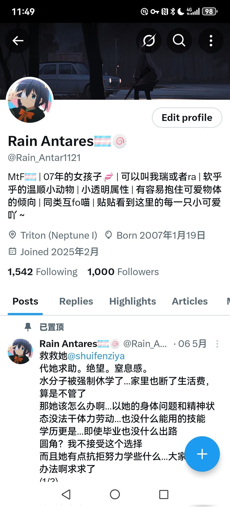

话说在推特上接触大家才63天欸…遇见了从未想过的好多人，好多事…一开始咱只是单纯地想找同类贴贴暖暖黏黏来着٩(｡・ω・｡)و
总之无论是喜是忧，推已经是咱生活的一部分啦～不知道还能在这里走多远…也许不会很久，但这里的人和事已经在咱心里留下了好深的印记呢ξ( ✿＞◡❛)

总之无论是喜是忧，推已经是咱生活的一部分啦～不知道还能在这里走多远…也许不会很久，但这里的人和事已经在咱心里留下了好深的印记呢ξ( ✿＞◡❛)

1000 Followers 🎉
纪念～喵咕，感谢大家～🥺
欸啊…有这么多人愿意驻足片刻，留意这只小透明，咱真的好开心呀♡*٩(ˊᗜˋ*)و✧
还是得做点事吧…没想好呢，可能会想点花样抄ID之类…呜现在很忙～等主包高考结束再整活嗷🥹
喵，路过的你不妨留个评论～以后有隐藏效果也说不定…吧
祝大家端午安康咪～🥰❤️ https://t.co/cqnsT5JF9l
纪念～喵咕，感谢大家～🥺
欸啊…有这么多人愿意驻足片刻，留意这只小透明，咱真的好开心呀♡*٩(ˊᗜˋ*)و✧
还是得做点事吧…没想好呢，可能会想点花样抄ID之类…呜现在很忙～等主包高考结束再整活嗷🥹
喵，路过的你不妨留个评论～以后有隐藏效果也说不定…吧
祝大家端午安康咪～🥰❤️ https://t.co/cqnsT5JF9l